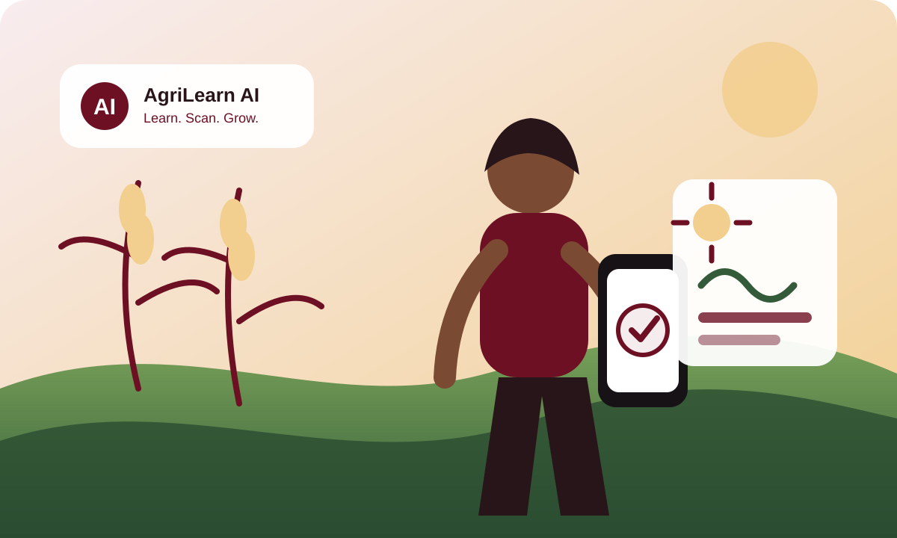

Concept and microsite development
The AgriLearn AI concept, responsible-use principles, proposed features and pilot framework have been documented for stakeholder review.
Programme updates
This page will share approved milestones, partnership announcements, pilot preparation and learning-resource releases.

The AgriLearn AI concept, responsible-use principles, proposed features and pilot framework have been documented for stakeholder review.
WHSF plans to engage agricultural institutions, schools, cooperatives, researchers, funders and technology partners.
Potential locations, participant groups, training materials, safeguards and evaluation measures will be confirmed before any pilot begins.